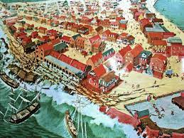
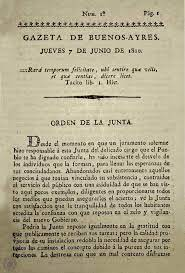

1654 - Louis XIV is crowned King of France
Louis XIV also known as Louis the Great or the Sun King, was King of France from 14 May 1643 until his death in 1715. On 7 June he as the
king of france. His reign of 72 years and 110 days is the longest recorded of any monarch of a sovereign country in history.
Louis XIV's France was emblematic of the age of absolutism in Europe.
7 June 2021

1692 – Port Royal, Jamaica, is hit by a catastrophic earthquake
The 1692 Jamaica earthquake struck Port Royal, Jamaica, on 7 June. A stopped pocket watch found in the harbour in 1959 indicated that it
occurred around 11:43 AM local time. Known as the "storehouse and treasury of the West Indies" and as "one of the wickedest places on Earth",
Port Royal was, at the time and one of the busiest and wealthiest ports in the Americas. The 1692 earthquake
caused most of the city to sink below sea level.
7 June 2021

1810 - The newspaper Gazeta de Buenos Ayres is first published in Argentina.
The Gazeta de Buenos Ayres was a newspaper originating in Buenos Aires in 1810. It was initially used to give publicity to the government
actions of the Primera Junta. In the beginning it was written by Mariano Moreno. The first issue was released the following June 7;
The date 7 June has been honored in Argentina since 1938.
7 June 2021
1991 – Mount Pinatubo erupts, generating an ash column 7 kilometres (4.3 mi) high
Mount Pinatubo is an active stratovolcano in the Zambales Mountains, located on the tripoint boundary of the Philippine provinces of Zambales,
Tarlac and Pampanga, all in Central Luzon on the northern island of Luzon. Its eruptive history was unknown to most before the pre-eruption volcanic activities of 1991,
just before June. It was erupted on 7 june.
7 June 2021

1948 – Anti-Jewish riots in Oujda and Jerada take place
The 1948 Anti-Jewish riots in Oujda and Jerada occurred on June 7–8, 1948, in the towns of Oujda and Jerada, in the northeast of the French
protectorate in Morocco.In those events 43 Jews and one Frenchman were killed and approximately 150 injured at the hands of local Muslims.
French officials argued that the riots were "absolutely localized" to Oujda and Jerada, and it had been "migration itself - and not widespread anti-Jewish animosity.
7 June 2021
Petition of Right
The Petition of Right, passed on 7 June 1628, is an English constitutional document setting out specific individual protections against
the state, reportedly of equal value to Magna Carta and the Bill of Rights 1689.[3] It was part of a wider conflict between Parliament and
the Stuart monarchy that led to the 1638 to 1651 Wars of the Three Kingdoms, ultimately resolved in the 1688 Glorious Revolution.
7 June 2021